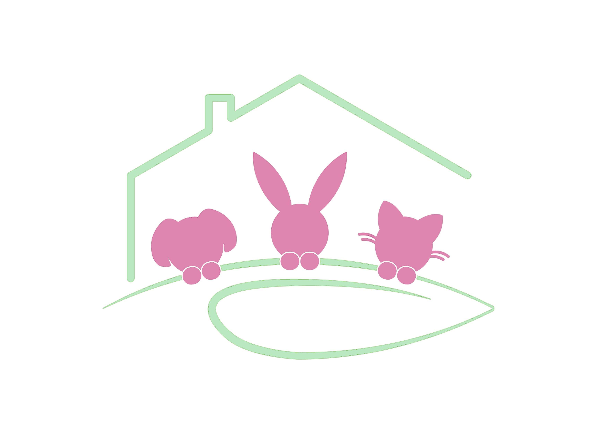

Pil'ou Pattes
Nos Évènements
Étant donné que nous sommes une association qui récupère des animaux abandonnés pour les faire adopter par
la suite,
nos passages dans différents salons ont pour but en grande partie de sensibiliser les familles, les couples
de
ce qui les attend en adoptant un animal, des différentes contraintes et surtout rappeler que les animaux ne
sont
pas des objects que l'on prend pour son plaisir personnel ou le plaisir de son enfant.